9 Data Visualization
Look at your data!
Yes, that means look at your raw data by producing subsets, printing to the console, and all the other things we’ve been doing. But it also means that we should visualize our data.
The potential purposes for doing so are legion, but we can name a few for starters:
- To detect errors (e.g., miscoded observations)
- To detect missing data
- To detect your own coding errors (e.g., miscoded derivative variables)
- To see the variation of single variables and the covariation between pairs of variables
- To summarize a lot of quantitative information so that it can be digested by the reader quickly and efficiently
- To reveal relationships between exposure and outcome
- To diagnose statistical or computational procedures (e.g., regressions, algorithms)
- To make principled decisions about how to analyze your data
Before we continue, though, we should keep one thing in mind: data visualization is not about making pretty pictures. Saying so does not discount the importance of aesthetics in your visualizations. However, the aesthetics you employ should be chosen to make the message of the figure clear to your audience. In some cases, we might want to highlight a particular contrast between two variables. In others, we might want to visualize how a particular variable trends over time. In yet others, we may simply want to visualize features in our raw dataset.
Each of these objectives implies the usefulness of certain visualizations and the impropriety of others. In other words, we want the purpose of the visualization to dictate the means by which we display relevant data.
In this introduction, we will focus on a couple of broad concepts and code examples in order to get you up and running as quickly as possible. However, I highly recommend two (freely available) resources in particular:
Data Visualization: A Practical Introduction by Kieran Healy
Top 50 ggplot2 Visualizations - The Master List (with Full R Code) by Selva Prabhakaran
Keeping these bookmarked will probably cover about 90%4 Source: Thin air of your data visualization needs.
9.1 Data set
All the examples below use the NHEFS data we used in the chapter on statistical analysis, so let’s remind ourselves what the data look like.
Rows: 1629 Columns: 64
── Column specification ──────────────────────────────────────────────────────────────────────────────────────────────────────────────────────────────────────────────────────────────────────────────────────────────────────────────────────
Delimiter: ","
dbl (64): seqn, qsmk, death, yrdth, modth, dadth, sbp, dbp, sex, age, race, ...
ℹ Use `spec()` to retrieve the full column specification for this data.
ℹ Specify the column types or set `show_col_types = FALSE` to quiet this message.spec_tbl_df [1,629 × 64] (S3: spec_tbl_df/tbl_df/tbl/data.frame)
$ seqn : num [1:1629] 233 235 244 245 252 257 262 266 419 420 ...
$ qsmk : num [1:1629] 0 0 0 0 0 0 0 0 0 0 ...
$ death : num [1:1629] 0 0 0 1 0 0 0 0 1 1 ...
$ yrdth : num [1:1629] NA NA NA 85 NA NA NA NA 84 86 ...
$ modth : num [1:1629] NA NA NA 2 NA NA NA NA 10 10 ...
$ dadth : num [1:1629] NA NA NA 14 NA NA NA NA 13 17 ...
$ sbp : num [1:1629] 175 123 115 148 118 141 132 100 163 184 ...
$ dbp : num [1:1629] 96 80 75 78 77 83 69 53 79 106 ...
$ sex : num [1:1629] 0 0 1 0 0 1 1 1 0 0 ...
$ age : num [1:1629] 42 36 56 68 40 43 56 29 51 43 ...
$ race : num [1:1629] 1 0 1 1 0 1 0 0 0 0 ...
$ income : num [1:1629] 19 18 15 15 18 11 19 22 18 16 ...
$ marital : num [1:1629] 2 2 3 3 2 4 2 2 2 2 ...
$ school : num [1:1629] 7 9 11 5 11 9 12 12 10 11 ...
$ education : num [1:1629] 1 2 2 1 2 2 3 3 2 2 ...
$ ht : num [1:1629] 174 159 168 170 182 ...
$ wt71 : num [1:1629] 79 58.6 56.8 59.4 87.1 ...
$ wt82 : num [1:1629] 68.9 61.2 66.2 64.4 92.1 ...
$ wt82_71 : num [1:1629] -10.09 2.6 9.41 4.99 4.99 ...
$ birthplace : num [1:1629] 47 42 51 37 42 34 NA NA 42 42 ...
$ smokeintensity : num [1:1629] 30 20 20 3 20 10 20 2 25 20 ...
$ smkintensity82_71: num [1:1629] -10 -10 -14 4 0 10 0 1 -10 -20 ...
$ smokeyrs : num [1:1629] 29 24 26 53 19 21 39 9 37 25 ...
$ asthma : num [1:1629] 0 0 0 0 0 0 0 0 0 0 ...
$ bronch : num [1:1629] 0 0 0 0 0 0 0 0 0 0 ...
$ tb : num [1:1629] 0 0 0 0 0 0 0 0 0 0 ...
$ hf : num [1:1629] 0 0 0 0 0 0 0 0 0 0 ...
$ hbp : num [1:1629] 1 0 0 1 0 0 0 0 0 0 ...
$ pepticulcer : num [1:1629] 1 0 0 0 0 0 0 0 0 0 ...
$ colitis : num [1:1629] 0 0 0 0 0 0 0 0 0 0 ...
$ hepatitis : num [1:1629] 0 0 0 0 0 0 0 0 0 1 ...
$ chroniccough : num [1:1629] 0 0 0 0 0 0 0 0 0 0 ...
$ hayfever : num [1:1629] 0 0 1 0 0 0 0 0 0 0 ...
$ diabetes : num [1:1629] 1 0 0 0 0 0 1 0 0 0 ...
$ polio : num [1:1629] 0 0 0 0 0 0 0 0 0 0 ...
$ tumor : num [1:1629] 0 0 1 0 0 0 0 0 0 0 ...
$ nervousbreak : num [1:1629] 0 0 0 0 0 0 0 0 0 0 ...
$ alcoholpy : num [1:1629] 1 1 1 1 1 1 1 1 1 1 ...
$ alcoholfreq : num [1:1629] 1 0 3 2 2 3 1 0 1 0 ...
$ alcoholtype : num [1:1629] 3 1 4 3 1 2 3 2 3 1 ...
$ alcoholhowmuch : num [1:1629] 7 4 NA 4 2 1 4 1 2 6 ...
$ pica : num [1:1629] 0 0 0 0 0 0 0 0 0 0 ...
$ headache : num [1:1629] 1 1 1 0 1 1 1 1 1 1 ...
$ otherpain : num [1:1629] 0 0 1 1 0 0 0 0 1 0 ...
$ weakheart : num [1:1629] 0 0 0 1 0 0 0 0 0 0 ...
$ allergies : num [1:1629] 0 0 0 0 0 0 0 0 0 0 ...
$ nerves : num [1:1629] 0 0 1 0 0 0 1 1 0 0 ...
$ lackpep : num [1:1629] 0 0 0 0 0 0 0 0 0 0 ...
$ hbpmed : num [1:1629] 1 0 0 0 0 0 0 0 0 0 ...
$ boweltrouble : num [1:1629] 0 0 0 0 1 0 0 0 0 0 ...
$ wtloss : num [1:1629] 0 0 0 0 0 0 0 0 0 0 ...
$ infection : num [1:1629] 0 1 0 0 0 0 0 0 0 0 ...
$ active : num [1:1629] 0 0 0 1 1 1 0 0 2 1 ...
$ exercise : num [1:1629] 2 0 2 2 1 1 1 2 2 2 ...
$ birthcontrol : num [1:1629] 2 2 0 2 2 0 0 0 2 2 ...
$ pregnancies : num [1:1629] NA NA 2 NA NA 1 1 2 NA NA ...
$ cholesterol : num [1:1629] 197 301 157 174 216 212 205 166 337 279 ...
$ hightax82 : num [1:1629] 0 0 0 0 0 1 NA NA 0 0 ...
$ price71 : num [1:1629] 2.18 2.35 1.57 1.51 2.35 ...
$ price82 : num [1:1629] 1.74 1.8 1.51 1.45 1.8 ...
$ tax71 : num [1:1629] 1.102 1.365 0.551 0.525 1.365 ...
$ tax82 : num [1:1629] 0.462 0.572 0.231 0.22 0.572 ...
$ price71_82 : num [1:1629] 0.4438 0.5493 0.0562 0.0548 0.5493 ...
$ tax71_82 : num [1:1629] 0.64 0.793 0.32 0.305 0.793 ...
- attr(*, "spec")=
.. cols(
.. seqn = col_double(),
.. qsmk = col_double(),
.. death = col_double(),
.. yrdth = col_double(),
.. modth = col_double(),
.. dadth = col_double(),
.. sbp = col_double(),
.. dbp = col_double(),
.. sex = col_double(),
.. age = col_double(),
.. race = col_double(),
.. income = col_double(),
.. marital = col_double(),
.. school = col_double(),
.. education = col_double(),
.. ht = col_double(),
.. wt71 = col_double(),
.. wt82 = col_double(),
.. wt82_71 = col_double(),
.. birthplace = col_double(),
.. smokeintensity = col_double(),
.. smkintensity82_71 = col_double(),
.. smokeyrs = col_double(),
.. asthma = col_double(),
.. bronch = col_double(),
.. tb = col_double(),
.. hf = col_double(),
.. hbp = col_double(),
.. pepticulcer = col_double(),
.. colitis = col_double(),
.. hepatitis = col_double(),
.. chroniccough = col_double(),
.. hayfever = col_double(),
.. diabetes = col_double(),
.. polio = col_double(),
.. tumor = col_double(),
.. nervousbreak = col_double(),
.. alcoholpy = col_double(),
.. alcoholfreq = col_double(),
.. alcoholtype = col_double(),
.. alcoholhowmuch = col_double(),
.. pica = col_double(),
.. headache = col_double(),
.. otherpain = col_double(),
.. weakheart = col_double(),
.. allergies = col_double(),
.. nerves = col_double(),
.. lackpep = col_double(),
.. hbpmed = col_double(),
.. boweltrouble = col_double(),
.. wtloss = col_double(),
.. infection = col_double(),
.. active = col_double(),
.. exercise = col_double(),
.. birthcontrol = col_double(),
.. pregnancies = col_double(),
.. cholesterol = col_double(),
.. hightax82 = col_double(),
.. price71 = col_double(),
.. price82 = col_double(),
.. tax71 = col_double(),
.. tax82 = col_double(),
.. price71_82 = col_double(),
.. tax71_82 = col_double()
.. )
- attr(*, "problems")=<externalptr> 9.2 Base R examples
You may find that working with plotting in base R is more efficient when you want quick-and-dirty visualizations—for instance, while you’re conducting exploratory data analysis.
9.2.1 Boxplots


9.2.2 Density Plots
## use na.omit() to drop missing values in the `sbp` variable
## R will throw an error otherwise
plot(density(na.omit(nhefs$sbp)))


9.2.4 Scatterplot Matrix
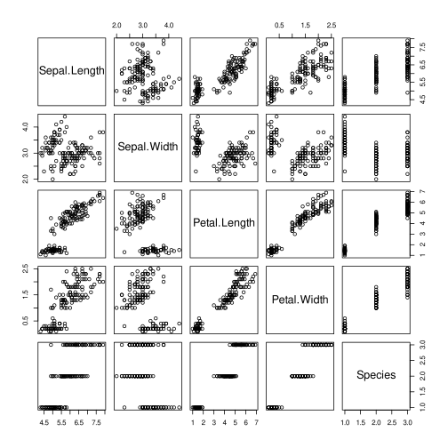

9.2.6 Linear Regression Diagnostics
Base R and some packages provide built-in plotting methods for certain types of objects. Here, feeding an object of the class lm will return a series of linear regression diagnostics.
## run a regression on built-in dataset ChickWeight
fit <- lm(wt82_71 ~ smokeyrs, data = nhefs)
class(fit)[1] "lm"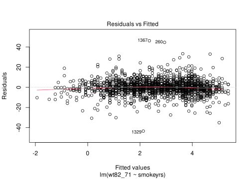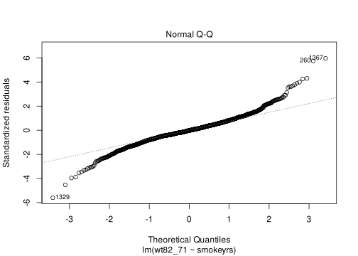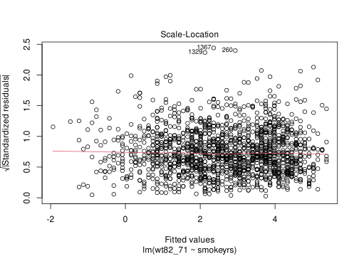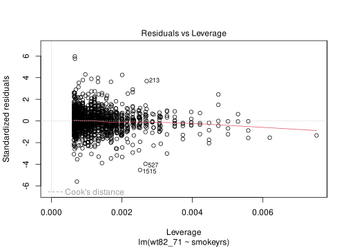
If you run plot(fit) as above, you might find R irritating in that it will print these plots to your image device (image pane in RStudio) in succession, leaving you to flip between images. For a nicer output, you can output a grid of regression diagnostics.
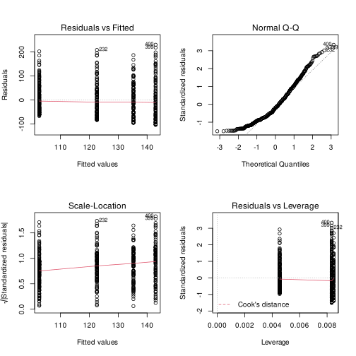
9.3 ggplot2 Examples
Before we start, let’s load a few of the packages we’ll be using.
library(ggplot2) # plotting package
library(ggthemes) # a package that adds plot themes to ggplot2
library(magrittr) # use pipes "%>%"Before, we get into the examples, I’m going to apply a universal theme for the subsequent plots:
The ggplot2 package in R is an excellent package for data visualization based on the grammar of graphics concept.5 Leland Wilkinson. The Grammar of Graphics. Springer, 2005. The basic idea is to divide plot features into conceptual layers defined by their function in the visualization.
Here’s a general schema for how this concept maps to plot components in ggplot2:
- data: the underlying data set and variables we wish to convert into plot aesthetics
- plot layer: geometric entities (e.g., shapes, lines), statistical transformations, positioning elements
- scales: scales applied to geoms to map additional data dimensions (e.g., a color gradient)
- coordinates: the coordinate system used to plot the data (e.g., Cartesian, polar)
- facets: specifications that control a grid of plots, showing the same plot within multiple discrete groupings
Note that I’ve assigned names to each element for the sake of introduction, but the descriptions themselves follow closely from Hadley Wickham’s (ggplot2 creator) own in the paper referenced here.6 Hadley Wickham (2010) A Layered Grammar of Graphics, Journal of Computational and Graphical Statistics, 19:1, 3-28, DOI: 10.1198/jcgs.2009.07098
In the following examples I will focus on longform syntax with the ggplot function. Learning the ins and outs of ggplot2 will give you more flexibility and control over your images, particularly when you need to produce publication-quality graphics. However, ggplot2 provides the qplot function for quick visualizations, akin to the base R graphics depicted above. One nice thing about qplot the its default setting to choose a geometric mapping automatically (hereafter, “geom”). Below, the function automatically selects a scatterplot.
Warning: Removed 77 rows containing missing values (geom_point).
However, we can specify the geom explicitly. Here we get a smoothed line:
`geom_smooth()` using method = 'gam' and formula 'y ~ s(x, bs = "cs")'Warning: Removed 77 rows containing non-finite values (stat_smooth).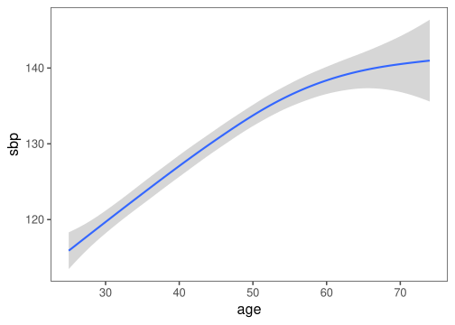
The ggplot2 website contains extensive documentation on all of the package’s functions, including many helpful worked examples.
Strange Symbols
Note the difference between the magrittr pipe %>%, which we use to feed our data set to the ggplot() function and the + symbol we use to bind together the lines describing plot elements. This distinction is mandatory, as ggplot2 will not allow you to use the magrittr pipe to link plot layers.
9.3.1 Boxplots
Warning: Removed 77 rows containing non-finite values (stat_boxplot).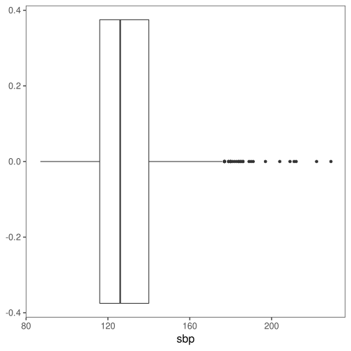
Warning: Removed 77 rows containing non-finite values (stat_boxplot).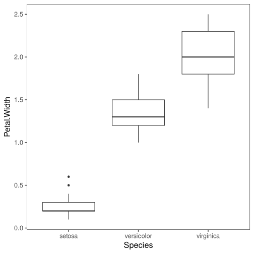
9.3.2 Density Plots
Warning: Removed 77 rows containing non-finite values (stat_density).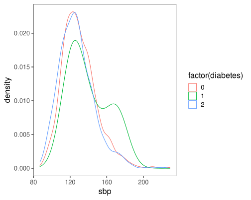
9.3.3 Scatterplots
If we want to see the relationship between age and systolic blood pressure, we can make a scatterplot.
Warning: Removed 77 rows containing missing values (geom_point).
Perhaps this relationship varies by diabetes status. In that case we need to differentiate each point based on the diabetes variable. We have multiple options to do so. Two that make immediate sense would be to differentiate species by color or by shape.
Warning: Removed 77 rows containing missing values (geom_point).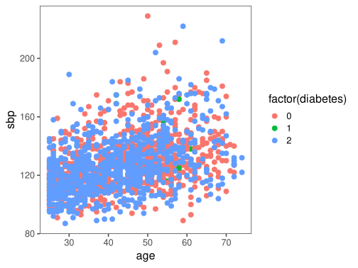
nhefs %>%
ggplot(
aes(
x = age,
y = sbp,
shape = factor(diabetes)
)
) +
geom_point(size = 3) +
scale_shape_manual(values = c(21, 22, 23)) # choose some shapes (optional)Warning: Removed 77 rows containing missing values (geom_point).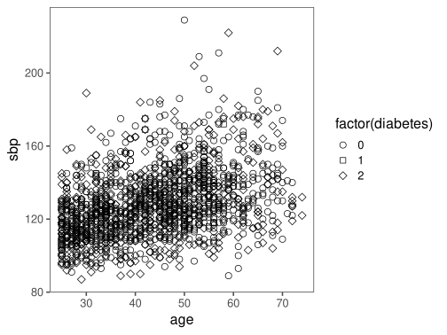
9.3.4 Faceted Plots
Another option would have been to create a separate scatterplot for each species. In the plot below, each section of the grid is called a facet. We’ll also save an initial (unfaceted) plot so we can play with the facet settings a bit.
## labels to use for axis and facet plots
dblabels <- c("0" = "No", "1" = "Yes", "2" = "Missing")
sbplab <- "Systolic blood pressure"
agelab <- "Age"
sbp_facet <- nhefs %>%
ggplot(aes(x = age, y = sbp)) +
geom_point() +
labs(x = agelab, y = sbplab)
sbp_facet +
facet_wrap(
vars(diabetes),
labeller = labeller(diabetes = dblabels)
)Warning: Removed 77 rows containing missing values (geom_point).
If we wanted a single column, we could have asked facet_wrap() for one.
Warning: Removed 77 rows containing missing values (geom_point).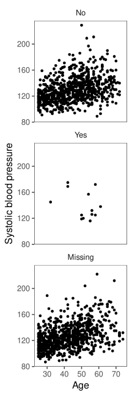
Finally, we also could have plotted the group-specific densities using facets instead of colors.
nhefs %>%
ggplot(aes(x = sbp)) +
geom_density() +
facet_wrap(
vars(diabetes),
labeller = labeller(diabetes = dblabels)
)Warning: Removed 77 rows containing non-finite values (stat_density).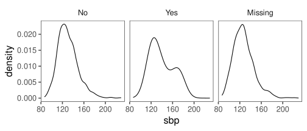
In practice, you will choose particular plot designs to illuminate the aspects of your data you want to highlight.
9.3.5 Bar Plots
To demonstrate the difference between two functions, geom_bar() and geom_col(), we’ll create a binary variable that encodes whether a given observation had a petal length less than 2 or at least 2.
library(dplyr)
### make discrete categories for Petal.Length
### only to demonstrate geom_bar and geom_col
nhefs_new <- nhefs %>%
mutate(
sbp.group = case_when(
sbp >= 140 ~ "High",
sbp < 140 ~ "Low",
TRUE ~ NA_character_
)
)
head(nhefs_new)# A tibble: 6 × 65
seqn qsmk death yrdth modth dadth sbp dbp sex age race income
<dbl> <dbl> <dbl> <dbl> <dbl> <dbl> <dbl> <dbl> <dbl> <dbl> <dbl> <dbl>
1 233 0 0 NA NA NA 175 96 0 42 1 19
2 235 0 0 NA NA NA 123 80 0 36 0 18
3 244 0 0 NA NA NA 115 75 1 56 1 15
4 245 0 1 85 2 14 148 78 0 68 1 15
5 252 0 0 NA NA NA 118 77 0 40 0 18
6 257 0 0 NA NA NA 141 83 1 43 1 11
# … with 53 more variables: marital <dbl>, school <dbl>, education <dbl>,
# ht <dbl>, wt71 <dbl>, wt82 <dbl>, wt82_71 <dbl>, birthplace <dbl>,
# smokeintensity <dbl>, smkintensity82_71 <dbl>, smokeyrs <dbl>,
# asthma <dbl>, bronch <dbl>, tb <dbl>, hf <dbl>, hbp <dbl>,
# pepticulcer <dbl>, colitis <dbl>, hepatitis <dbl>, chroniccough <dbl>,
# hayfever <dbl>, diabetes <dbl>, polio <dbl>, tumor <dbl>,
# nervousbreak <dbl>, alcoholpy <dbl>, alcoholfreq <dbl>, …The geom_bar() function will count up the number of members in each group.
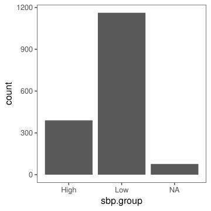
Let’s make that a little prettier, shall we?
The NA you see represented in the plots indicates missing values of systolic blood pressure.
nhefs_new %>%
ggplot(aes(x = sbp.group)) +
geom_bar(
fill = "lightgray",
color = "black",
width = 0.5
)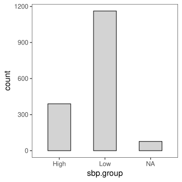
Often you’ll find that you’ll be summarizing your data to make certain types of plots. Let’s say we had already counted the number of members per sbp.group level ourselves, as so:
# A tibble: 3 × 2
sbp.group n
<chr> <int>
1 High 390
2 Low 1162
3 <NA> 77To create the preceding plot, we would use geom_col() instead of geom_bar():
nhefs_sum %>%
ggplot(aes(x = sbp.group, y = n)) +
geom_col(
fill = "lightgray",
color = "black",
width = 0.5
)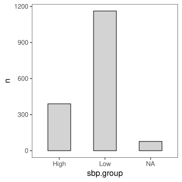
In many cases, you’ll find more than one viable route to your chosen graphic.
9.3.6 Scatterplot Matrix
Base R has a nice function to create scatterplot matrices. To do so with ggplot2 we need to install another package called GGally.
One wonderful thing about ggplot2 is that it boasts a universe of extensions written by R users to achieve specific plotting goals. While learning the ins and outs of ggplot2 is fun (for me, anyway), you may find extensions useful.
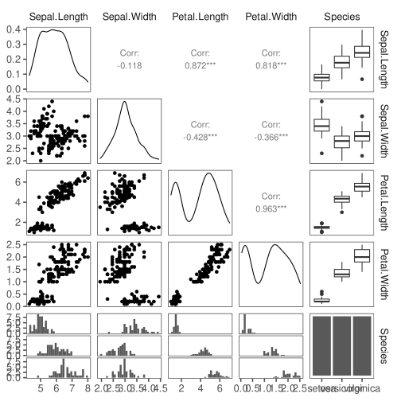
Missing Data
Note that I’ve suppressed a number of warnings produced by this ggpairs example. These warnings highlight that some of the variables used in the plot have varying numbers of missing values.
This visualization is nice because it gives you a lot of information in a small space. The bottom row even contains embedded facets!
9.4 Special Topics
9.4.1 Publication-quality Graphics
9.4.2 Animated Graphics
9.4.3 Interactive Graphics
Most of the time you’ll probably focus on creating static graphics for publication. However, you may find dynamic graphics fitting when sharing HTML notebooks or other web-based resources.
Luckily, the plotly package makes creating dynamic graphics from ggplot2 plots trivial.
Lets make an interactive graphic out of our static sbp_facet plot from earlier in this chapter. It’s literally this simple!
sbp_facet_plotly <- sbp_facet +
facet_wrap(
vars(diabetes),
labeller = labeller(diabetes = dblabels)
) +
ggtitle("Systolic blood pressure, by age and diabetes status") +
theme_few()
plotly::ggplotly(sbp_facet_plotly)If you mouse over the points, you should see information about each observation (i.e., x and y variable values).
You could also use the plot_ly() function to make the plotly figure directly.
plotly::plot_ly(
data = nhefs,
x = ~ age,
y = ~ sbp,
color = ~ factor(diabetes),
type = "scatter",
mode = "markers"
)If interactive graphics is an avenue you’d like to pursue further, look into the r2d3 library, which allows you to create beautiful visualizations using the powerful d3 Javascript library.
Plotly is actually powered by d3.
For R users, however, the plotly package provides a more immediate means to translate your data into interactive graphics. As we saw above, we can create a nice plot in ggplot2 and export it for the web with plotly::ggplotly!